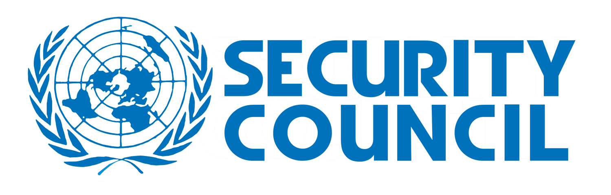

The United Nations Security Council (UNSC) is one of the six principal organs of the United Nations,
charged with the maintenance of international peace and security as well as accepting new members to the United Nations
and approving any changes to its United Nations Charter. The Security Council consists of a total of fifteen members, with five permanent and ten temporary members.
Agenda Item: Open Agenda
Committee Director: TBA